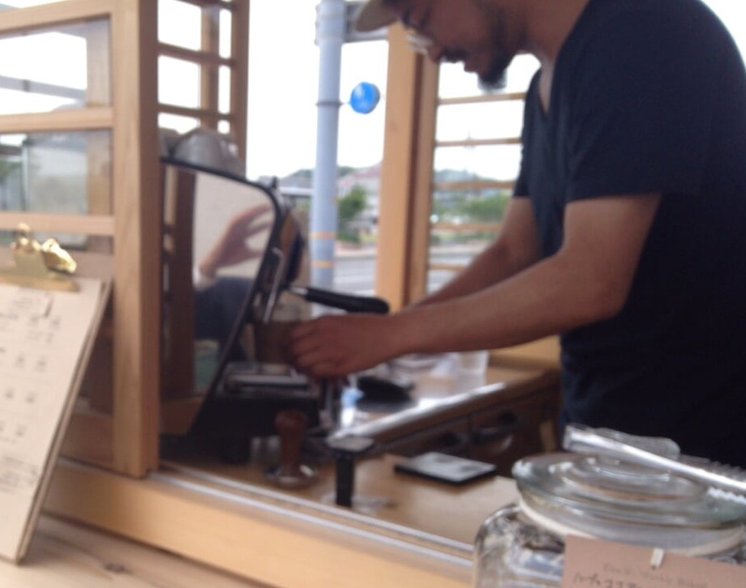

珈琲の焙煎始めた頃は、基準となるものが無かったため焙煎のできあがりにムラがありました。
今は、自分自身の何か焙煎の基準のようなものが出来たのでそれと比べることで今日の出来が分かるようになってきました。
それでも、天候や気温によって思い通りに焙煎できないことがあります。今までの経験からこれは最初の火加減に有ると感じています。データ的には、温度の上下の線を理想の形に沿ってくれれば大体上手に焙煎できる。
これを簡単に解説すると。
釜(焙煎する釜のこと)が暖まってから焙煎する豆を投入します。
投入直後には一旦釜の温度が下がります。
そこから、除々に上昇していく。この上昇時間によって仕上がりが変わるのです。なので、最初の火加減と温度が大事になってくるのです。
**岡山のコーヒー店 [#wa0c5b65]
先日、岡山へ行った時に二つのコーヒー店へ寄りました。
一人は若い方で、いろいろな所を飲み歩いて自分の好きなコーヒーを見つけてみた方で、コーヒーに対する情熱を感じました。
コーヒーを始めてからは短いですが、学ぶところがとても多いみせでした。

bollard
もうひとつのお店は、12年前に独学でお店を始めたそうです。
焙煎やコーヒーのことをいろいろ勉強されて自分のスタイルをつくりあげていました。この方のコーヒーへの情熱もすごく愛情ともいう感じが漂ってきます。
一枚板のカウンターと一杯づつ丁寧にネルドリップする珈琲は時間をわすれさせてくれます。

折り鶴
経験はとても大切ですが、その前に情熱があってからのことだと感じます。